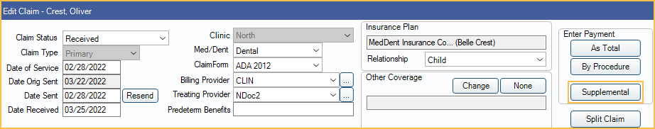

Supplemental Insurance Payments
In the Claim Edit window, at the upper-right, is a Supplemental button.
Supplemental claim payments are payments for procedures that have already been marked received. This can include additional payments, or negative amounts (e.g., Insurance Refunds). Like any insurance payment, a user must receive it, then finalize the payment by attaching it to the claim.
Supplemental payments can also be created using the To Supplemental button. See Pending Payment section in Claim.
Receiving a Supplemental Payment
To receive a supplemental payment, follow the steps below:
- Highlight the procedure line items the supplemental payment applies to.
- Users must select the original procedure line item when entering a supplemental payment. Do not select a line item with the status of Supp.
- Click Supplemental in the upper right corner.
- Enter the payment amount in the Ins Pay column.
- Click OK.
- On the Edit Claim window, click This Claim Only if finalizing a single claim, or Batch if finalizing for a batch payment.
- Enter the amount and verify the attached claim(s). See Finalize Insurance Payment.
Once created, supplemental payments display as an additional line item in the grid of procedures with the Status of Supp.

Correcting Write-Offs Using a Supplemental Payment
Supplemental payments can be used to account for adjustments to write-offs already entered, as long as the net write-off is 0 or greater. This is useful when the write-off amount changes and a user does not want to or cannot change the original write-off amount (e.g., doing so would affect historical reports).
Follow the steps below to use a supplemental payment to correct a write-off:
- Highlight the procedure line items the supplemental payment applies to.
- Users must select the original procedure line item when entering a supplemental payment. Do not select a line item with the status of Supp.
- Click Supplemental in the upper right corner.
- Enter the write-off adjustment amount in the WriteOff column.
- If the write-off needs to be increased, enter a positive number.
- If the write-off needs to be decreased, enter a negative number.
- If a write-off was entered on another payment line, users only need to enter the adjustment amount, not the full write-off amount (e.g., if the write-off was originally entered as 40, but should have only been 30, only enter the difference of -10).
- Click OK.
Automatic Supplemental Payments
Supplemental payments can be automatically created by the Income Transfer Manager if a claim was originally received As Total, rather than By Procedure. The supplemental entries are displayed as Txfr in the Status column of the Edit Claim window but show as Supplemental in the Edit Claim Procedure window.
Automatic supplemental claim transfers cannot be edited but may be deleted. If a transfer entry is deleted, all other transfer entries on the claim are deleted as well.
Additionally, if a claim with a supplemental transfer is edited, all the supplemental transfer entries are deleted. This includes editing or deleting a received claim procedure from the Claim Edit window and the Procedure Info window, and entering additional insurance payments to the claim.
Open the Income Transfer Manager and click OK to re-transfer any remaining unallocated claim payments.